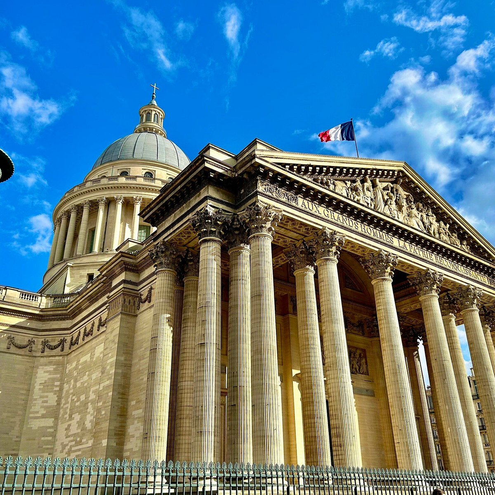
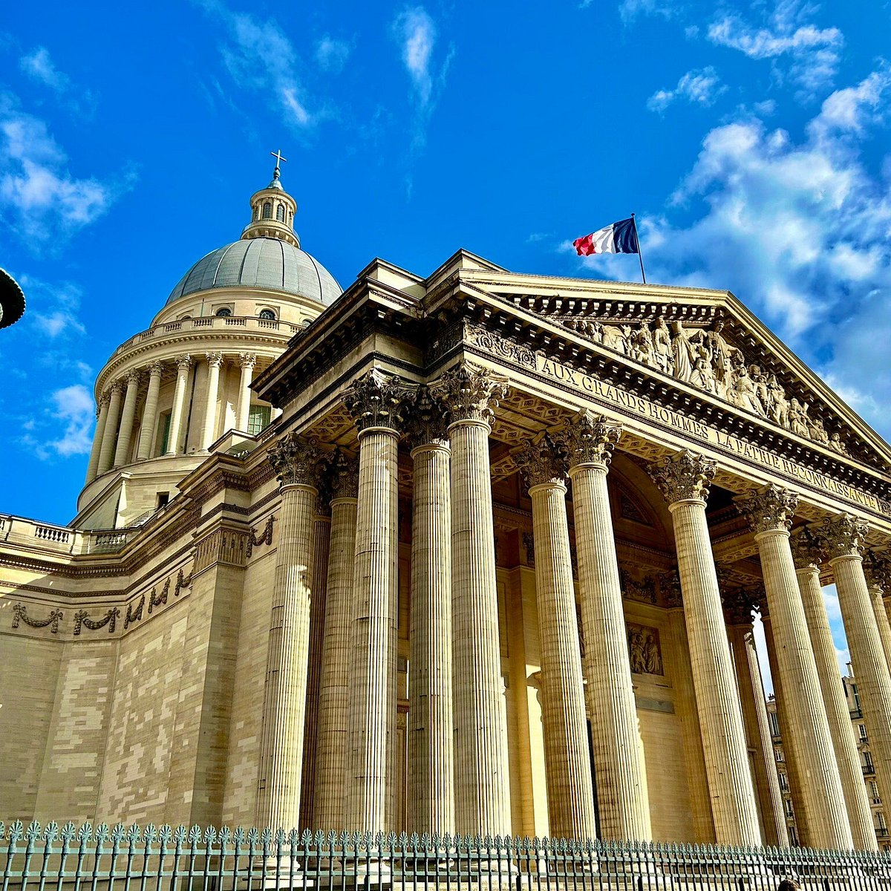

Rome Itinerary: 5 Days of History
Rome is a timeless city where history, art, and culture meet. Here's your 5-day guide to explore ancient ruins, charming streets, and delicious Italian food!
Day 1: Ancient Rome
- Morning: Explore the Colosseum and Roman Forum.
- Afternoon: Walk through the Palatine Hill.
- Evening: Stroll around Piazza Venezia.
- Food: Try traditional carbonara pasta.
Day 2: Vatican Wonders
- Morning: Visit Vatican Museums and Sistine Chapel.
- Afternoon: Explore St. Peter’s Basilica.
- Evening: Relax at St. Peter’s Square.
- Food: Enjoy gelato near the Vatican.
Day 3: Iconic Sights
- Morning: Toss a coin in the Trevi Fountain.
- Afternoon: Visit the Spanish Steps and Piazza di Spagna.
- Evening: Wander around Piazza Navona.
- Food: Eat pizza in a traditional trattoria.
Day 4: Art & Gardens
- Morning: Admire art at Borghese Gallery.
- Afternoon: Relax in Villa Borghese Gardens.
- Evening: Enjoy sunset views from Pincian Hill.
- Food: Sip espresso at a street café.
Day 5: Hidden Rome
- Morning: Visit the Pantheon.
- Afternoon: Explore the bohemian district Trastevere.
- Evening: Farewell dinner with pasta and wine.
- Food: Try tiramisu in a local bakery.
Bonus (Optional Day 6-7 ideas): Day trips to Pompeii or Tivoli Gardens.

 
